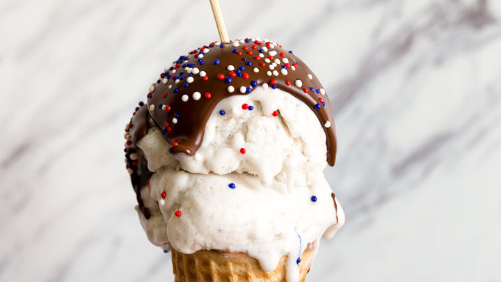

Farouk Bakre started following you.
Farouk Bakre saved your recipe.
Jimoh Abdulrazak rated your recipe.

Farouk Bakre commented on your recipe.
Learning how to make a chicken shawarma with beef sausages can be fun. Spice up this recipe by adding a bit of alligator pepper to spice things up.n

Farouk Bakre liked your comment to Chicken Shawarma recipe.
Learning how to make a chicken shawarma with beef sausages can be fun. Spice up this recipe by adding a bit of alligator pepper to spice things up.